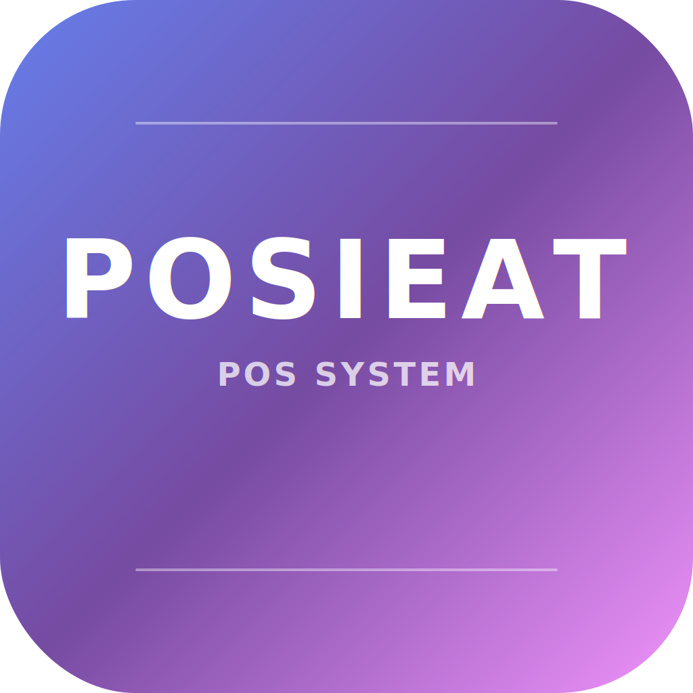

POSIEAT
POS SYSTEM
◆
●
▲
■
⬢
📱 注文・会計
📊 売上履歴
🗑️ 削除履歴
📈 売上分析
🍽️ メニュー
🛒 ご注文
メニューを選んでご注文ください
合計: ¥0
🗑️ クリア
💳 会計
📈 売上履歴
🗑️ 全削除
まだ売上履歴がありません
🗑️ 削除履歴
🧹 履歴クリア
削除された履歴はありません
📈 売上分析
💰
総売上
¥0
📋
注文数
0件
🥘
商品数
0個
💵
平均注文額
¥0
⏰ 時間別売上
🍽️ カテゴリ別売上
🏆 人気商品ランキング
データがありません
確認
この操作を実行しますか？
実行
キャンセル